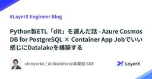
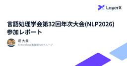

LayerX エンジニアブログ
https://tech.layerx.co.jp/
LayerX の エンジニアブログです。
フィード

Python製ETL「dlt」を選んだ話 - Azure Cosmos DB for PostgreSQL × Container App Jobでいい感じにDatalakeを構築する 2
2
LayerX エンジニアブログ
こんにちは。LayerX Ai Workforce事業部でSREをしています @shinyorke（しんよーく）と申します。 最近はAi Workforceのデータ周りの基盤を作る仕事をしながら、個人としては野球解説AI Agentの開発を頑張っています。 本ブログでは、Ai Workforceのデータ周りの基盤のコンポーネントの一部であるELTの選定をどうしたかについて執筆します。 特に今回は、 マネージドサービス（Azure Data Factory、通称ADF）での構築・実装を検討していたが なぜ断念したのか ADF の代替として dlt + Container App Job を選んだ…
4日前

言語処理学会第32回年次大会(NLP2026) 参加レポート
LayerX エンジニアブログ
こんにちは、Ai Workforce事業部 プロダクト部 FDEグループ エンジニアの堤(@ozro_223) です。この記事は2026年3月9日〜13日に栃木県宇都宮市のライトキューブ宇都宮で開催された 言語処理学会第32回年次大会(NLP2026)の参加レポートです。 LayerXとしては、昨年に引き続きプラチナスポンサーとして協賛させていただき、スポンサーブースの出展と非公式で懇親会を開催しました。 NLP会場告知看板プラチナスポンサーとしてLayerXのロゴが掲載されている様子 スポンサーブースの様子 スポンサー展示では、学生・研究者・企業の方など、多くの方にお立ち寄りいただきました。…
5日前

AIエージェントを強くする『合成データ』作成のニッチなTips集
LayerX エンジニアブログ
この記事は、LLM や AI エージェントを使って「AIエージェントのための合成データ」を作るための実践的な Tips 集です。
12日前
一度目のミスは「学習機会」。LayerX流・形式知のループの回し方
LayerX エンジニアブログ
こんにちは。LayerX Ai Workforce事業部のFDE（Forward Deployed Engineer）グループでエンジニアリングマネージャーをしている shirai です。 このブログは、自分のキャリアの中で大部分を占めている、マネージャーとしての経験を元に自分なりのマネジメントの考え方を伝える読み物と思ってください。 どちらかというと未来の自分に対して、当時はこう考えていたんだ、という記録を残す感覚で書いています。 マネージャーかくあるべし、という話ではなく、こういうこと考えている人もいるんだ、ぐらいの気持ちで読んでもらえればと思います。 1.はじめに：マネージャーの仕事 マ…
12日前
DEIM2026参加レポート
LayerX エンジニアブログ
こんにちは、機械学習エンジニアの宇都(@kuto_bopro)です。 この記事は2026年2月28日 ~ 3月5日にオンライン・オンサイト（兵庫県神戸市）のハイブリッドにて開催されたDEIM2026 第18回データ工学と情報マネジメントに関するフォーラム（第24回日本データベース学会年次大会）の参加レポートです。 LayerXとしては、昨年に引き続きプラチナスポンサーとして協賛させていただき、企業ブースの展示と技術報告に参加させていただきました。 https://pub.confit.atlas.jp/ja/event/deim2026 今年は 2月28日〜3月2日にオンラインによる一般発表セ…
15日前
NLP2026（言語処理学会第32回年次大会）にプラチナスポンサーとして協賛します
LayerX エンジニアブログ
こんにちは、バクラク事業部で機械学習エンジニアをしている伊藤です。 LayerXは、NLP2026（言語処理学会第32回年次大会）にプラチナスポンサーとして協賛します。 イベント概要 当社の参加内容 スポンサー展示 懇親会 協賛の背景 おわりに 関連記事 イベント概要 NLP（言語処理学会年次大会）は、言語処理学会 が年に1度開催する、自然言語処理および関連分野の研究発表や交流の場として国内最大規模のイベントです。全国のアカデミアや企業からNLPの研究・開発に従事している人々が集い、研究発表と活発な議論がなされる場です。LayerXからはバクラク事業部・Ai Workforce事業部を含む数名…
15日前
EMConf JP 2026にOperation Supportersとして協賛します #emconf_jp
LayerX エンジニアブログ
こんにちは、バクラク事業部でエンジニアをしている須藤（@sudoakiy）です。 LayerXは、EMConf JP 2026（Engineering Management Conference Japan） にOperation Supportersとして協賛いたします。 昨年に続いての協賛・ブース出展となります。 エンジニアリングマネジメントを実践する皆さんと直接お話できるこの機会を、今年もとても楽しみにしています。 EMConf JP とは EMConf JP 2026 の概要 協賛の背景 Engineering Manager向けコンテンツ 「増幅」と「触媒」 ブース出展します！ 🗳 …
18日前
【未踏会議2026 MEET DAY】LayerX から Ai Workforce 事業 CEO が登壇 & ブース出展します！
LayerX エンジニアブログ
2026年1月に入社しました、TechPR の太田です。 初ブログで LayerX が大切にしている未踏会議の告知を担当することになり、大変うれしく思います！ さて、本日はその舞台となる、2026年3月7日(土) 開催の「未踏会議2026 MEET DAY」への登壇・ブース出展についてお知らせします。 未踏会議2026 開催概要 日時：2026年3月7日（土）10:00～17:00（受付開始 9:30） 場所：東京ミッドタウン・ホール 〒107-0052 東京都港区赤坂9-7-2 オンライン視聴: ニコニコ生放送、YouTube LIVE 主催：独立行政法人 情報処理推進機構（IPA）、一般社…
19日前
DEIM2026（第18回データ工学と情報マネジメントに関するフォーラム）にプラチナスポンサーとして協賛します
LayerX エンジニアブログ
こんにちは、バクラク事業部で機械学習エンジニアをしている伊藤です。 LayerXはDEIM2026（第18回データ工学と情報マネジメントに関するフォーラム）にプラチナスポンサーとして協賛いたします。 DEIM2026 概要 技術報告 企業展示 産学連携副委員長 懇親会 協賛の背景 おわりに 関連記事 DEIM2026 概要 DEIM（データ工学と情報マネジメントに関するフォーラム）は、コンピュータサイエンスに関する幅広い研究トピックについての議論・意見交換を目的として開催される研究会です。異なる研究領域の方どうしや、学生・研究者・企業の開発者など異なる背景の人たちどうしがざっくばらんに交流でき…
22日前
Data Enablingチームを立ち上げました -「データが語りかけてくる」世界を目指して
LayerX エンジニアブログ
こんにちは。バクラク事業部BizOps部データグループのJagaです。 2026年1月にLayerXに入社し、最初のミッションとしてData Enablingチームの立ち上げ*1を担当してきました。1ヶ月が経ってチームの方向性が見えてきたので、考えてきたことや取り組んできたことを紹介します。 LayerXのデータ活用の「今」 バクラク事業部では、プロダクトの利用ログ、営業やカスタマーサポートのデータなど、日々多様なデータが蓄積されています。データ基盤の整備も進んでおり、分析環境はある程度整ってきたと言えそうです。 また、LayerXは行動指針に「Bet AI」を掲げており、全社的にAI活用が盛…
1ヶ月前
Software Design 連載「実録 AI ネイティブプロダクト開発」がスタートします！
LayerX エンジニアブログ
こんにちは！すべての経済活動を、デジタル化したい @serima です。 この度、技術評論社さんの「Software Design 2026年3月号」より、LayerXによる新連載「実録 AI ネイティブプロダクト開発」がスタートします！ 本連載は、AIエージェントをただ動く状態から「実際にプロダクションで価値を生む」状態にするための実践知を、全10回にわたって体系的に公開するものです。 gihyo.jp 全10回の連載テーマ 本連載では、体験設計からバックエンド、運用監視までを網羅する予定です。 Ambient Agent - ユーザー体験に自然に溶け込むAIエージェントの概念とアーキテクチ…
1ヶ月前
AWS マルチアカウント環境からの Google Cloud フェデレーション設計 — AI時代に合わせた社内認証基盤づくり
LayerX エンジニアブログ
はじめに LayerX Fintech 事業部から、三井物産デジタル・アセットマネジメント(以下、MDM) に出向している piroshi です。 AI 活用や業務自動化が当たり前になってきた今、データや処理はプラットフォームをまたいで動くことが増えています。特に「システム基盤はAWSで動かしつつ、社内業務は Google Workspace 前提」といった構成では、AWS 上のワークロードから Google Cloud(以下、GCP) や Google Workspace の API へ安全にアクセスしたい場面が自然に出てきます。 MDM でもそのニーズが顕在化しました。具体的には、共有ドラ…
2ヶ月前
Ai Workforce事業部SREの現在とこれから
LayerX エンジニアブログ
こんにちは。LayerX Ai Workforce事業部でSREをしています@shinyorke（しんよーく）と申します。 最近入社1年を迎えました。社内外の皆様の応援とフォローのおかげです、いつもありがとうございます。 1年前は「事業部1人目のSRE」として、プロダクトや事業部のキャッチアップ、採用といった所に奔走していました（詳細はこちらのブログを参照）。 そして現在は新たにJoinしたSREメンバーとともにサイト信頼性エンジニアリングの実現に奔走しています。 本ブログでは、 現在のAi Workforce SREチームの紹介 今後どうしていきたいか（どういうSREと働きたいか） 以上2つ…
2ヶ月前
データ検索基盤チームの立ち上げ
LayerX エンジニアブログ
LayerX Ai Workforce事業部で新たに立ち上げた「データ検索基盤チーム」について紹介します。生成AI時代において、差別化を生むのはデータです。LLM/VLMの登場により、これまでシステムで扱うことが難しかった非構造化データやマルチモーダルデータ(スライド、契約書、画像など)を、高精度で情報抽出し構造化できるようになりました。Ai Workforceは特定業務に限定せず、汎用的なAIエージェントプラットフォームを目指しています。企業の多様な部署や業務にまたがるドキュメントとデータを統合し、意味でつなげる技術(ナレッジグラフやGraphRAGなど)を活用することで、これまでにないエンタープライズ向けデータ検索システムの構築に挑戦しています。また、検索について多様なユースケースに対応する検索基盤をゼロから構築する難しさと面白さについても語られています。全文検索、ベクトル検索、Reranker、Knowledge Graphなど幅広い機能を揃えながら、複雑な権限管理とプラットフォームとしての柔軟性を両立させることが求められる、チャレンジングな環境です。
2ヶ月前
副業・業務委託エンジニア受け入れの実態と、うまくいくタスク設計のコツ（バクラク事業部の事例をもとに）
LayerX エンジニアブログ
はじめに 「LayerXって正社員しか採用していないのでは？」「バクラクの開発はハードルが高そう」 そんな印象を持つ方もいるかもしれません。 ただ実際には、LayerX バクラク事業部ではこれまでも 副業・業務委託のソフトウェアエンジニアを受け入れ、プロダクト開発を一緒に進めてきた実績があります。 最近SNSでこの話題に触れた際にも反響があり、「興味はあるけれど、実態が分からない」という方が一定数いることを実感しました。 バクラク事業部で副業・業務委託のソフトウェアエンジニアも受け入れていること、もしや世の中に全然知られていないのでは？？という話を同僚としていたのですが、これって本当ですか…？…
2ヶ月前
LLMによる「非定型見積書の明細抽出タスク」の精度を約80%→約95%に改善した話
LayerX エンジニアブログ
こんにちは。Ai Workforce事業部 FDEグループエンジニアのkoseiと申します。以下本文は、以前インターンとして一緒にプロジェクトを進めてくれた @kimu さんが在籍中に執筆したものです（冒頭のみkoseiが追記しています）。本ブログで紹介したアルゴリズムにより精度が向上し、お客様に高い価値を提供することができました。（本手法については特許出願済み）そこに至るまでの開発の様々な学びが詰まっているので、是非じっくりとお読みください！ はじめに こんにちは！LayerX Ai Workforce 事業部 FDEグループで2025年3月から11月まで約8ヶ月間インターンをしていた@ki…
2ヶ月前
FDE募集開始から半年の振り返りと2026年の展望
LayerX エンジニアブログ
こんにちは！Ai Workforce事業部FDEの恩田（さいぺ）です。 7月にFDE（Forward Deployed Engineer）の募集を開始し、早半年が経過しようとしています。本記事では、FDE組織の募集を開始してから現在までをふりかえりつつ、2026年のFDEやLLMについて、組織・技術の両面から綴ってみたいと思います。 tech.layerx.co.jp FDEの募集を始めたのは今年7月なのですが、この半年で突然生まれた職種というわけでなく、その原型はLayerXの創業当時まで遡ります。LayerXでは祖業のBlockchain時代から当時のCTOがお客さまのところに足繁く通って…
3ヶ月前
Fintech事業部の2025年起きたAI効率化の話、あるいはラーメンの話
LayerX エンジニアブログ
はじめましての人ははじめまして！そうでない人はお久しぶりです！ LayerX Fintech事業部でVPoEを担当しています、 takochuu です。 この記事は、LayerX Tech Advent Calendar 2025 の 24 日目の記事です。 23日目は、「バクラク事業部のデータ基盤 2025: 今年一年の変化を振り返るの巻」でした。 tech.layerx.co.jp 最近は速い車に乗るのが趣味です。 最近ゴルフもはじめました。ゴルフ誘ってください。車出しますよ！ さて、唐突ですが2025年のLayerX Fintech事業部は複数のプロダクトを高速に改善・リリースし続けてい…
3ヶ月前
バクラク事業部のデータ基盤 2025: 今年一年の変化を振り返るの巻
LayerX エンジニアブログ
この記事は、LayerX Tech Advent Calendar 2025 の 23 日目の記事です。 tech.layerx.co.jp こんにちは。バクラク事業部 BizOps部 データグループの@civitaspoです。今年は子どもたちが入手困難なものをサンタさんにお願いしなかったので、心穏やかな気持ちでサンタさんを家に迎え入れることができそうです。 はじめに 今年も本日を入れて残り9日となりました。本記事では、データ基盤の2025年を締めくくるために、この1年でデータ基盤に起こった変化を振り返ります。 2023年の振り返りは以下の記事でまとめました。 tech.layerx.co.j…
3ヶ月前
Snowpark Container Servicesを用いたAI Agentのプロトタイプ開発
LayerX エンジニアブログ
はじめに こんにちは。LayerX のバクラク事業部で機械学習エンジニアをしております島越(@nt_4o54)です。 この記事は LayerX Tech Advent Calendar 2025の 22 日目の記事です！ 今回の記事では、AI Agent のプロトタイプ開発において、Snowpark Container Service（SPCS）を活用したアプローチについてご紹介します。 はじめに AI Agent 開発における「データアクセス」という壁 開発環境と本番環境のギャップ LayerX における AI Agent 開発の背景 LayerX のデータ基盤と Snowflake Sno…
3ヶ月前
CocoIndexでKnowledge Graphを更新しながらRAGをする
LayerX エンジニアブログ
LayerXのAi Workforce事業部で検索エンジニアをしている鷹取(@takatorisatoshi)です。この記事は LayerX Tech Advent Calendar 2025の22日目の記事です。 はじめに 通常、RAGといえば、ドキュメントをチャンク化し、Embedding（埋め込みベクトル）の類似度で検索を行うNative RAG（Retrieval-Augmented Generation）を指すことが一般的です。 Native RAGは手軽に導入できる一方で、いくつかの構造的な弱点があります。例えば、ベクトル化の過程で主語・述語・目的語といった論理構造が圧縮（Flat…
3ヶ月前
AIプロジェクト設計・課題設定において意識していること
LayerX エンジニアブログ
こんにちは。LayerX Ai Workforce事業部R&Dチームのリサーチエンジニアの矢野目です。 この記事は LayerX Tech Advent Calendar 2025 20日目の記事です。 本記事では、「AIプロジェクトの設計・課題設定において、意識していること」というテーマで書いていこうと思います。 私はこれまで複数のAIプロジェクトに携わってきましたが、その中で、課題設定を曖昧にしたまま「技術ありき」で進めてしまうと、途中で方向性を見失ったり、完成した成果物がビジネス課題の解決に結びつかなかったりすることを痛感しました。それ以来、AIプロジェクトにおける課題設定の大切さを強く…
3ヶ月前
LayerXのdbt Pythonモデル活用術 - 外部連携の実装パターン
LayerX エンジニアブログ
この記事は、dbt Advent Calendar 2025 の 20日目の記事です。 qiita.com バクラク事業部 BizOps部 データグループへ25年11月に入社した さえない（ @saeeeeru ）です。LayerX のデータグループは BizOps 部に所属し、「事業成果に直結するデータ基盤」を構築しています。事業の意思決定を支える Fact Base の提供から、AI エージェントが活用できるデータ環境の整備まで、幅広い役割を担っています。詳しくは昨日の記事で紹介していますので、気になった方は是非ご覧ください。 tech.layerx.co.jp このデータ基盤でデータモデ…
3ヶ月前
実践！gpt-5-mini推論レイテンシ改善: パラメータ調整とプロンプトエンジニアリングによる爆速回答
LayerX エンジニアブログ
こんにちは、LayerXのバクラク事業部 AI BPOチームでエンジニアをしているikehara (@ikehara_dev)です。 この記事は LayerX Tech Advent Calendar 2025 19日目の記事です。 本記事では、推論（Reasoning）モデルgpt-5-miniを本番投入した際の事例を紹介します。 当初は推論レイテンシが想定上限に達し、運用が厳しい状態でした。そこから「推論パラメータ調整」と「プロンプトエンジニアリング」を行い、精度を落とさずにレイテンシを改善した方法を、試行錯誤の過程を交えて解説します。 TL;DR gpt-5-mini を本番投入したらレ…
3ヶ月前
LayerXのデータ基盤の未来を語るために、最初の1ヶ月でやった3つのこと
LayerX エンジニアブログ
この記事は、LayerX Tech Advent Calendar 2025 の 19日目の記事です。 tech.layerx.co.jp おはようございます、こんにちは。そして、こんばんは。バクラク事業部 BizOps部 データグループへ25年11月に入社した さえない（ @saeeeeru ）です。 命名理由が気になる方は、カジュアル面談で話しましょう。 jobs.layerx.co.jp 今回は、入社してから1ヶ月で「LayerXのデータ基盤の未来を語るためにやったこと」を、整理したいと思います。 TL;DR LayerXのデータグループがBizOps部にいるのは「事業成果に直結するデー…
3ヶ月前
異なる処理に関係性を持たせる、 Span Links を使った分散トレースの実装
LayerX エンジニアブログ
AI Agentアプリケーションにおける非同期処理のトレーシングで、親子関係を作らずに処理間の関連性を追跡したい場面があります。本記事ではOpenTelemetryのSpan Linksを使って「別トレースだが関係がある」ことを表現する実装方法を、Pythonのコード例とともに解説。Ai WorkforceでのAssistant-Orchestrator間の実践例やDatadogでの可視化方法も紹介します
3ヶ月前
AI活用を安定させる型「Diff-in / Merge-out」~翻訳タスクで学ぶ責務の分離~
LayerX エンジニアブログ
この記事は、LayerX Tech Advent Calendar 2025 の 17日目の記事です。 こんにちは。LayerXのバクラク事業部 申請経費精算チームでエンジニアをしているyoheiです。 最近はNetflixのラヴ上等にハマっておりAK-69さんからヤンキー哲学を学んでおります。屈強なセキュリティが常時いる恋愛リアリティショー最高なので是非みてみてください。 以前、AI Editorをフル活用したFlutterアプリの多言語対応で、Cursorを使った多言語対応（i18n）の効率化を紹介しました。 その後、AI開発ツールはさらに進化しました。一方で、AIを「賢く使う」以前に、A…
3ヶ月前
GPT, Geminiのマルチモーダルドキュメントの認識能力評価
LayerX エンジニアブログ
はじめに この記事は、LayerX Tech Advent Calendar 2025 の 17日目の記事です。 初めまして、LayerX Ai Workforce事業部でR&Dインターン生として勤務しているマツイと申します。 R&Dチームは発足から1年も経過しておらず、サマーインターン1期生としてマルチモーダルなドキュメント（スライドや図表、グラフなど）に関連するR&D業務に取り組んでいます！ 本記事では、2025年10月時点の OpenAI GPT および Google Gemini のAPI単体を用いた、マルチモーダルドキュメントの認識能力評価の結果を紹介します。 (本調査を行った直後に…
3ヶ月前
LLMを用いて長文ドキュメントを速く・安く・安全に構造化する試み
LayerX エンジニアブログ
こんにちは。Ai Workforce事業部 FDEグループ エンジニアのkoseiと申します。 この記事はLayerX Tech Advent Calendar 2025 16日目の記事です。 本日は私たちの事業部が開発しているプロダクト「Ai Workforce」が扱うような長いドキュメントを構造化する方法として少し試していることについてお話しできればと思います。 背景 Ai Workforceではこれまで、エンタープライズのお客様にドキュメントワークを中心とした業務を効率化するユースケースを幅広く扱ってきました。 例えば、契約書のような200P以上に及ぶ長大なドキュメント同士の比較や、見積…
3ヶ月前
Temporal における実行境界を超えるコンテキスト伝搬の仕組み
LayerX エンジニアブログ
この記事は、LayerX Tech Advent Calendar 2025 の 14 日目の記事です。 こんにちは、LayerX バクラク事業部 Platform Engineering 部 Enabling グループに新卒入社した shibutani と申します。 弊社では AI エージェント基盤を中心として、ワークフローエンジンであるTemporalを活用しています。本記事では、Temporal において実行境界を超えてリクエストを通じて一貫したデータ（以後コンテキストと呼ぶ）を伝搬する方法について、Go SDK と TypeScript SDK の両方の実装方法を解説します。 背景：な…
3ヶ月前